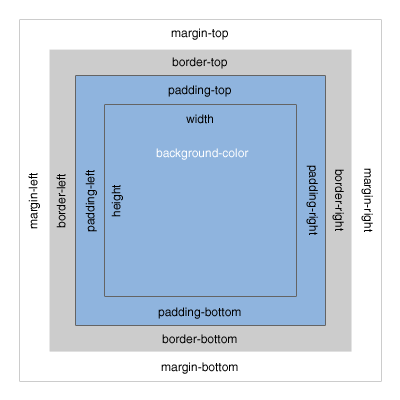

CSS Dimensions
Height and Width
The CSS proprties height and width can be used to specify a height and width of a rendered element. The values are pixels by defualt, but can also be:
- em, ex, ch, pt, pc, rem - standard typography measures except em — which is font-size instead of em-width (x-height, 0-width, point which is 4/3 of a pixel, and pica which is 16 pixels) and "rem", the font-size of the root document element
- in, cm, mm, px - based on the reference pixel of the device - printers used to be more accurate in these measures. The px is not a raw pixel value, but adjusted by the device-pixel-ratio (and the browser zoom)
- %, vw, vh, vmin, vmax - respectively: relative size of the parent element, the width of the viewport, its height, the smaller of the two, the larger of the two
Margins and Padding
The margin defines the distance reserved around an element. The padding defines the distance reserved within an element between it and it's content.
The padding is added to the interior space of the element. So an element with width:200px and padding: 10px will be 210px wide. Likewise the margin around an element is added to the interior space of the parent element.
All 4 sides can be specified, either together or on separate propert declarations. If the margin property has four values:
margin: 25px 50px 75px 100px;
- top margin is 25px
- right margin is 50px
- bottom margin is 75px
- left margin is 100px
If the margin property has three values:
margin: 25px 50px 75px;
- top margin is 25px
- right and left margins are 50px
- bottom margin is 75px
If the margin property has two values:
margin: 25px 50px;
- top and bottom margins are 25px
- right and left margins are 50px
If the margin property has one value:
margin: 25px;
- all four margins are 25px
These same formats apply for padding.
Both properties also can specifically specify their orientation:
margin-left: 2vw; // margin, or padding, either could be specified
padding-right: 1em; // and so on, for all 4
margin-top: 1vh;
padding-bottom: 2em;